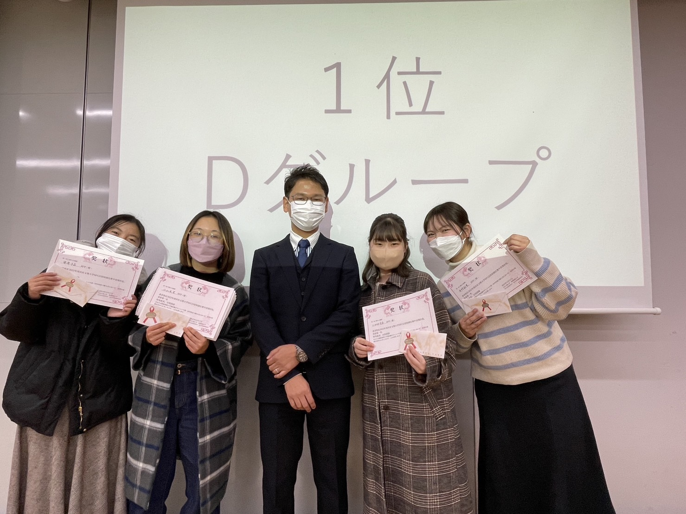
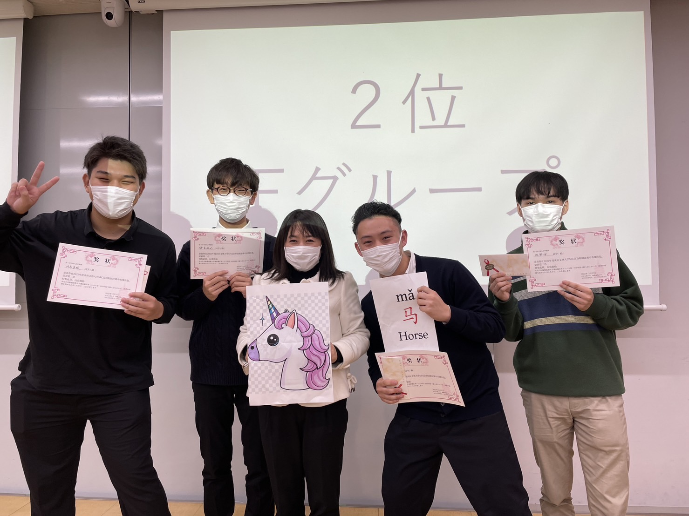
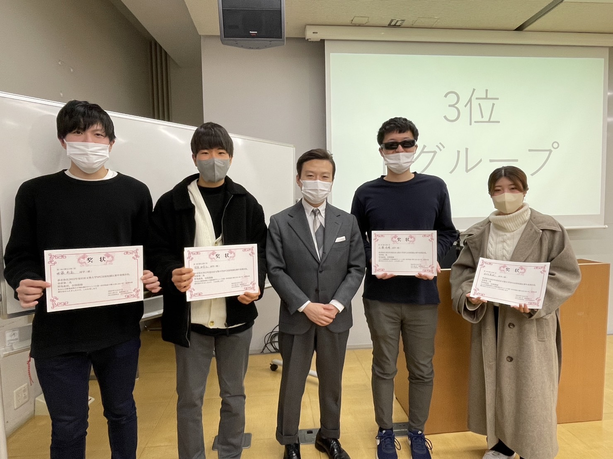

中国語インテン2期 寸劇大会を開催しました
2023.01.18
2022年12月27日に、2022年度秋学期中国語インテンシブ2期 寸劇大会を開催しました。
当日の動画
履修者の方の感想
Nさん
本当に楽しかったです！インテン1でお世話になった先生や同級生に久しぶりに会えたこと、前よりも流暢にみんな喋るようになっていたことに感動しました。受講者がそれぞれ工夫して小道具やセリフの割り振りを考えていたり準備していたりしたのも、すごいと思いました。みんなとても発音が綺麗だったので良い刺激を受けられたのではないかと思います。素敵な企画を考え、開催していただき、本当にありがとうございました！
Oさん
発音を練習し、セリフも全員分覚えて挑みましたが、本番開始直前にセリフが全て飛びました。ものすごく焦りましたが、体が無意識で台詞を喋ってくれたので無事終えることができました。この経験を通して事前準備のあり方を考えさせられました。また他クラスの創意工夫とユーモアに溢れた発表も拝見し、言語を学ぶことの楽しさを再認識しました。
Yさん
中国語を勉強し始めてからおおよそ8ヶ月の時点で、自分の中国語をたくさんの人に聞いてもらえる機会として、今回の寸劇大会は非常に有意義なものであったと思う。自分の中国語は不十分な部分が多いので、それらを修正していきたいと思った上、レベルの高い仲間がたくさんいることに気づき、中国語学習の意欲がさらに高まったように思える。今後の学習もアウトプットをすることにも目を置きながら、意欲的に取り組んでいきたいと思う。今回のような取り組みを企画してくださった先生方、SAさんに感謝でいっぱいです。
入賞者の皆さん


